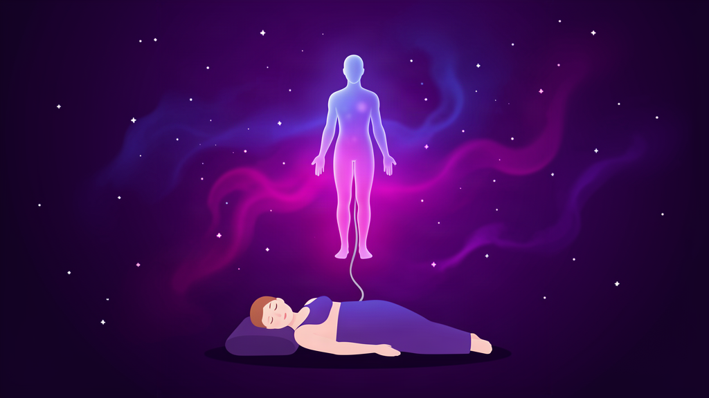

Jede Nacht schläft dein Körper — und dein Bewusstsein macht weiter. Das ist ein Traum: eine unbewusste Außerkörperlichkeitserfahrung. Astralprojektion ist dasselbe, nur mit wachem Beobachter. Ein forschungsgestützter, schrittweiser Leitfaden, um wach zu bleiben, während der Körper einschläft — und den natürlichen Übergang, der darauf folgt, bewusst zu erleben.
Astralprojektion (auch Astralreise, Seelenreise, Seelenwanderung, oder Außerkörperlichkeitserfahrung / OBE) ist die Praxis der absichtlichen Herbeiführung eines Zustands, in dem dein bewusstes Erleben sich so anfühlt, als hätte es sich von deinem physischen Körper gelöst und befände sich auf Reisen außerhalb von ihm. Praktizierende verschiedener Kulturen beschreiben dieselbe Grunderfahrung: ein Gefühl des Schwebens, den Körper zurückzulassen, und sich durch Orte zu bewegen — manchmal den realen Raum um dich herum, manchmal weite symbolische Landschaften, die gemeinsam die astrale Ebene genannt werden.
Neurowissenschaftler und Psychologen klassifizieren OBEs als dissoziative Erfahrungen — derselben Familie wie luzide Träume und Depersonalisation. Sie entstehen durch eine vorübergehende Störung der Hirnregion, die normalerweise drei Dinge zusammenfügt:
Wo sich dein Körper befindet, dass es dein Körper ist, und wie er sich von innen anfühlt (Propriozeption).
Wo deine Augen sind und worauf sie blicken.
Wo du gerade bist, in der Welt.
Wenn die Hirnregion, die diese drei Signale integriert, aus dem Takt gerät, verliert das Gehirn seinen Anker: Du kannst deinen Körper sehen von einem Standpunkt aus, der nicht deine Augen sind, und diese Fehlanpassung ist die Außerkörperlichkeitserfahrung. 2007 erzeugten Schweizer Forscher die erste vollständige OBE auf Abruf durch elektrische Stimulation des TPJ bei einem Epilepsiepatienten — als die Stimulation endete, endete auch das Erlebnis (Blanke et al., Brain).
OBEs lassen sich zuverlässig durch Dissoziativa und Psychedelika auslösen (Ketamin, PCP, DMT, Psilocybin, LSD, MDMA) — Substanzen, die auf dieselben temporo-parietalen und Precuneus-Regionen wirken. Querbestätigung: ändere die Chemie, ändere die Integration, erhalte die Erfahrung.
Kontrollierte parapsychologische Experimente (Versuche, während einer OBE verborgene Ziele "fernzusehen") haben keine statistisch über dem Zufall liegenden Ergebnisse erbracht, sobald man Selektionseffekte berücksichtigt. Die Erfahrung ist real; die Wahrnehmungsansprüche bleiben unbewiesen.
Die Überzeugung, dass das Bewusstsein außerhalb des Körpers reisen kann, ist wirklich uralt und taucht unabhängig in jeder großen Zivilisation auf, von der wir Aufzeichnungen haben. Die englische Wortprägung "astral projection" wurde im 19. Jahrhundert von der Theosophischen Gesellschaft geprägt; die Praxis selbst ist viel älter.
Das ba (Seele) sollte über dem mumifizierten Körper über den ka (Subtilkörper) schweben, wie im Totenbuch dargestellt.
Der angakkuq der Inuit und der yaskomo der Waiwai reisen beide absichtlich in der Seele, um zu heilen, Wahrsagerei zu betreiben und Kindern Namen zu geben.
Beschrieben als Liṅga Śarīra (Subtilkörper) im Yogavashishta und im Mahabharata. Eine der siddhis, die durch diszipliniertes Yoga erreichbar sind.
Der ikiryō der japanischen Folklore — der Geist eines Menschen, der den schlafenden Körper verlässt — und die Trennungsmeditationen des Geistes vom Körper in Das Geheimnis der Goldenen Blüte.
Blavatsky und die Theosophische Gesellschaft prägten den englischen Begriff astral projection und formalisierten die "astrale Ebene" als erste Schicht jenseits der physischen.
Der amerikanische Radio-Manager, dessen Buch Journeys Out of the Body eine Million Mal verkauft wurde und die spirituelle Bezeichnung durch den neutralen, wissenschaftlich klingenden Ausdruck "out-of-body experience" ersetzte. Er gründete das Monroe Institute, das bis heute OBE-Induktion lehrt.
Bevor wir zur eigentlichen Praxis kommen, hilft es zu wissen, wie sich die Erfahrung typischerweise anfühlt — die konkreten Empfindungen, nach denen du Ausschau hältst, in ungefähr der Reihenfolge ihres Auftretens, damit du erkennst, was geschieht, und nicht in Panik daraus herausfällst.
Der Körper fühlt sich schwerelos an, leichter als die Matratze. Viele Praktizierende berichten von einem plötzlichen Gefühl, gehoben oder gekippt zu werden — sanft, nicht gewaltsam. Manchmal begleitet von einem leichten Summen oder Druck. Das ist die Schwelle. Bleibst du ruhig und versuchst du nicht, sie zu "analysieren", folgt meist innerhalb von Sekunden die nächste Stufe.
Viele erste Austritte verlassen nicht den Raum — sie bestehen darin, von oben auf den Körper herabzuschauen, manchmal vom Fußende des Bettes, manchmal von der Decke. Der Raum sieht korrekt aus. Einzelheiten — Bücher in einem Regal, der Bildschirm deines Handys — werden oft als zutreffend berichtet, wobei die Berichte variieren.
Berichtete Entitäten variieren stark: spirituelle Führer, verstorbene Verwandte, unbekannte Figuren, "Präsenzen", die keine Form haben. Die meisten dieser Begegnungen sind emotional neutral oder friedlich. Manche Praktizierende berichten von feindlichen oder erschreckenden Entitäten — fast immer beim Eintritt, nie nach der Stabilisierung.
Die "astrale Ebene" der älteren Literatur — weite Städte, Bibliotheken, Schulen, Heiltempel, manchmal als höher schwingende Landschaften beschrieben. Die Berichte sind seltener als die Schweben-/Aufwachen-Variante, aber eindrucksvoll genug, dass Praktizierende oft jahrelang Notizen führen. Ob das objektive Orte, geteilte archetypische Bilder oder rein Subjektives sind, ist ungeklärt.
Viele Praktizierende beschreiben einen leuchtenden Faden, meist silbern oder golden, der von der Brust oder dem Nabel zum physischen Körper zurückläuft. Sie wird als automatisch beschrieben — nichts, was du erschaffst — und ist mit dem Gefühl verbunden, jederzeit zurückkehren zu können.
Überraschend konsistent über Kulturen und Praktizierende hinweg: Die ersten Minuten einer klaren OBE sind oft von einem intensiven Gefühl des Wiedererkennens, der Erleichterung oder Vertrautheit geprägt — als wäre dieser Zustand normaler als das alltägliche Wachbewusstsein. Viele Menschen finden das tagelang verstörend.
Die folgende Tabelle ist ein Komposit aus Praktizierenden-Umfragen (Monroe Institute, Astral Codex, r/AstralProjection). Die Häufigkeitsangaben sind subjektiv über Tausende von Selbstberichten.
| Empfindung | Beschreibung | Häufigkeit |
|---|---|---|
| Schweben / Leichtigkeit | Körper fühlt sich schwerelos an; Gefühl, von der Matratze aufzusteigen oder gehoben zu werden. | Häufig |
| Vibrationen & Summen | Hoher Ton, körperweites Summen oder ein Rauschen wie weißes Rauschen direkt vor dem Austritt. | Häufig |
| Blick von oben | Den eigenen schlafenden Körper aus wenigen Fuß Höhe sehen, oft vom Fußende des Bettes. | Häufig |
| Silberkordel | Wahrgenommener leuchtender Faden, der den Astralkörper mit dem physischen Körper verbindet. | Häufig |
| Treffen mit einem Führer oder Wesen | Eine Entität — spirituell, verstorbener Verwandter oder unbenannte Präsenz — beim Austritt oder auf Reisen. | Gelegentlich |
| Wiedererkennung / Vertrautheit | Plötzliches Gefühl, dass dieser Zustand "normaler" ist als das gewöhnliche Wachbewusstsein. | Gelegentlich |
| Andere Reiche besuchen | Große symbolische Landschaften (Städte, Bibliotheken, Schulen, Tempel), die nicht dem physischen Raum entsprechen. | Selten |
| Fernwahrnehmung | Zutreffende Wahrnehmung weit entfernter Personen oder Orte, denen der Praktizierende gerade nicht nahe ist. | Selten |
Astrales Reisen erlaubt uns, das Universum jenseits der Grenzen unserer physischen Form zu erkunden. — Eine häufige Beschreibung aus Praktizierenden-Umfragen
Dies ist die konsolidierte Methode, die von Robert Monroe gelehrt und von Praktizierenden wie William Buhlman, Robert Bruce und Hunderten moderner Anleitungen verfeinert wurde, die sie Nacht für Nacht geübt haben. Sie ist der einfachste, zuverlässige Einstiegspunkt und der, mit dem ich heute Abend beginnen würde.
Bereite dich gut vor. Bequeme Lage, ruhiger Raum, Pläne und Ziele in einem eigenen Journal aufgeschrieben. Benutze die Toilette. Entscheide vorher, wohin du gehen und was du tun willst, sobald du draußen bist — Absicht zählt mehr als jede Technik.
Lass den Körper tief einschlafen, halte das Bewusstsein hellwach. Das ist der schwierigste Teil — und hier findet die eigentliche Arbeit statt. Die stärkste einzelne Methode dafür ist Yoga Nidra oder eine gleichwertige systematische Body-Scan-Meditation.
Kribbeln, Summen, laute Geräusche, manchmal ein Gefühl der Lähmung. Das ist die Schwelle. Es kann intensiv und beängstigend sein beim ersten Mal — das ist normal. Kämpfe nicht dagegen an; wenn du weißt, was es ist, kannst du es willkommen heißen und sogar wachsen lassen.
Der Vibrationszustand ist deine Startbahn. Wähle eine Austrittsmethode und entscheide dich: Aufstieg, Hinausrollen, Seil oder Aufstehen. Nicht spielen — beabsichtigen. Der Wechsel ist eher ein Schalter als eine Reise.
Setze vor dem Start ein Rückkehrfenster. Die meisten Projektionen enden nach 10–20 Minuten von selbst. Wenn du den Ruck spürst zurückzukommen, folge ihm — gleite sanft in den Körper, bewege eine Hand, öffne die Augen und schreib auf, was du erinnert hast, bevor die Details verblassen.
Die Hinweise unten sind berichtete Erfahrungen einzelner Praktizierender. Sie sind keine Behauptungen dieses Leitfadens und kein Ersatz für die Schritt-für-Schritt-Methode weiter oben. Sie stehen hier, weil Leser, die sie nützlich finden, häufig an einem bestimmten Punkt nicht weiterkommen. Jede Notiz ist ihrer Quelle zugeordnet.
Das ideale Zeitfenster sind die frühen Morgenstunden — etwa eine Stunde vor deiner üblichen Aufwachzeit, oder die ersten Minuten nach dem Wiedereinschlafen in einer Nachtunterbrechung. Dein Körper ist ausgeruht, dein Geist taucht gerade aus dem Schlaf auf, und die Dissoziationsschwelle ist am niedrigsten. Stell dir einen Wecker, wenn nötig — aber auch das Gegenteil, absichtlich länger wach zu bleiben, funktioniert, sobald du die Technik kennst.
Dunkel, leise, warm. Keine leuchtenden Elektronikgeräte, wo du sie sehen kannst; das Handy lautlos (oder mit dem Bildschirm nach unten). Ein Partner im Bett ist in Ordnung, solange er/sie still schläft, aber allein geht in den ersten Monaten leichter. Praktiziere niemals beim Autofahren, in der Nähe von Klippen oder bei irgendeiner körperlichen Tätigkeit — du liegst.
Das ist die Stellung, die du im Video gesehen hast, und sie ist die richtige. Handflächen nach oben ist wichtig — es ist eine offene, empfangsbereite Haltung, und die leichte Veränderung der Schulterposition hilft dem Körper, sich tiefer zu entspannen als mit verschränkten Armen. Kopf auf ein dünnes Kissen (oder keins). Lass deine Füße leicht auseinanderfallen; lass deinen Kiefer einen Bruchteil eines Zentimeters sinken.
Schließ die Augen. Lautlos sag etwas wie: "Ich werde meinen Körper jetzt bewusst verlassen." Sag es einmal, mit leiser Überzeugung, und lass es dann los. Wiederhole es nicht — der Moment der Erklärung ist der Samen. Von diesem Punkt an ist deine einzige Aufgabe, dich zu entspannen, nichts anderes mehr zu "tun".
Beginn oben am Scheitel und arbeite langsam nach unten zu den Zehen. Weiche mental jeden Körperteil nach dem anderen auf. Vielen Praktizierenden hilft es, einen Körperteil 3–5 Sekunden lang anzuspannen und dann loszulassen — der Kontrast lässt die Entspannung tiefer wirken. Reihenfolge: Kopfhaut, Gesicht, Kiefer, Hals, Schultern, Arme, Hände, Brust, Bauch, Hüften, Oberschenkel, Waden, Füße. Verweile länger bei Kiefer und Schultern — dort halten die meisten Menschen unbewusste Spannung. Überspringe diesen Schritt nicht. Der Körper muss zuerst einschlafen; erst dann kann der Geist wach bleiben.
Lange, langsame Ausatmungen. Einatmung durch die Nase, etwa 4 Zählzeiten, Ausatmung durch den Mund (oder die Nase) 6–8 Zählzeiten. Innerhalb von ein bis zwei Minuten fühlt sich der Körper schwerer und wärmer an — das ist die Umschaltung in den Parasympathikus. Verändere den Rhythmus nicht, wenn er sich richtig anfühlt; mach einfach weiter.
Dies ist der Zustand, den Monroe Focus 10 nannte, und er ist das eigentliche Tor. Du weißt, dass du dort bist, wenn:
Beim ersten Mal kann sich das seltsam anfühlen. Bleib einfach. Versuch noch nicht, irgendwas zu "tun".
Viele Praktizierende — nicht alle — berichten von einer charakteristischen Reihe von Empfindungen direkt vor dem Austritt:
Das ist weit verbreitet, seit mindestens hundert Jahren dokumentiert, und ist das deutlichste einzelne Signal dafür, dass ein Austritt unmittelbar bevorsteht. Versuch nicht, es zu stoppen. Bleib einfach ruhig und warte.
Der Vibrationszustand ist deine Startbahn. Du musst nicht warten, bis er "aufgehört" hat — die meisten Praktizierenden treten während der Vibrationen aus, nicht danach. Wähle eine der folgenden Methoden und hinterfrage nicht:
Stell dir vor (nicht "versuch es hart"; visualisiere sanft), dass dein Bewusstsein langsam gerade nach oben aus deiner Brust aufsteigt, wie ein Heliumballon. Nicht zerren — stell dir einfach die Aufwärtsbewegung vor und lass sie weitergehen. Die meisten Austritte mit dieser Methode sind schwebend und langsam.
Stell dir vor (oder beabsichtige geistig), dass dein Körper sich zur Seite rollt, aus dem Bett, genau so, wie du dich im Schlaf auf die andere Seite drehst. In den ersten Sekunden fühlt es sich so an, als würde der physische Körper wirklich rollen — dann findest du dich in einer nicht-physischen Kopie des Raums wieder. Viele Anfänger erleben mit dieser Methode ihre erste OBE.
Visualisiere ein leuchtendes Seil, das über deiner Brust hängt. Greif mit einer Astralhand hinauf und zieh es eine Handbreit herunter. Greif mit der anderen. Wiederhole, bis dein Astralkörper aufrecht über dem physischen sitzt. Am besten für Menschen, die in Schlafparalyse aufwachen und eine klare motorische Aufgabe brauchen.
Am direktesten, auch am ruckartigsten. Sobald du im Vibrationszustand bist, beabsichtige einfach: "Ich stehe jetzt auf." Visualisiere es nicht; nimm die Position ein. Manche Praktizierende stehen beim ersten Versuch auf; andere brauchen diese Methode mehrere Nächte hintereinander, bis sie wirkt.
Die ersten 5–10 Sekunden nach dem Austritt sind die zerbrechlichsten — du verlierst die Luzidität, wenn du in Panik gerätst, dich aufregst oder dich zu schnell bewegst. Drei Stabilisatoren, in der Reihenfolge, wie sie am häufigsten gelehrt werden:
Sobald du dich stabil fühlst, hast du eine echte Wahl: im unmittelbaren Raum bleiben (eine lokale Erkundung, nützlich zum Üben und um zu bestätigen, dass die Erfahrung reproduzierbar ist), oder weiter reisen. Setze immer eine Absicht zur Rückkehr, bevor du irgendetwas anderes tust — zu dir selbst, zu deinem physischen Körper, in einer bekannten Anzahl von Minuten. Die meisten Anfänger kehren innerhalb von 10–20 Minuten natürlich zurück; manche werden durch ein plötzliches Geräusch sofort zurückgezogen.
Die Rückkehr erfolgt normalerweise automatisch. Du wirst ein sanftes Ziehen spüren — die Idee der "Silberkordel", oder einfach, dass der Körper die Aufmerksamkeit wieder aufnimmt. Du kannst die Rückkehr auch bewusst einleiten: Wenn du nach oben aufgestiegen bist, schwebe einfach wieder hinunter; wenn du hinausgerollt bist, kehre die Rolle um; beabsichtige in jedem Fall "Ich bin jetzt zurück in meinem Körper" und spüre die Verschiebung.
Die von Monroe abgeleitete Praxis oben ist die beste Allzweck-Methode, aber nicht die einzige. Wähle die, die zu deiner Art zu schlafen passt, und wechsle, wenn die aktuelle Methode mehr als ein paar Wochen lang stockt.
Schlaf ein paar Nächte lang auf dem Rücken. Wenn du nicht aufstehen kannst und nicht in Panik gerätst, sag lautlos: "Ich bin in einer Schlafparalyse; mein Bewusstsein ist wach; ich werde mich jetzt trennen." Die meisten Menschen mit häufigen Schlafparalysen erleben ihre erste OBE innerhalb einer Woche nach Anwendung dieses Protokolls.
Geeignet für: chronische SP-BetroffeneWerde in einem Traum zuverlässig luzid (Realitätschecks, Traumtagebuch, MILD/WILD-Techniken). Geh innerhalb des Traums auf eine Tür, einen Spiegel oder eine Wand zu und beabsichtige, hindurchzugehen. Viele Praktizierende berichten, dass der Traum zusammenbricht und du auf der anderen Seite in eine OBE "springst". Leichter als direkte Induktion für Menschen, die bereits luzide träumen.
Geeignet für: Luzide TräumerYoga Nidra ("Nicht-Schlaf-Tiefenruhe") ist eine geführte Praxis, die speziell darauf ausgelegt ist, den Körper in tiefe Entspannung zu versetzen, während der Geist bewusst engagiert bleibt — genau Monroes Focus 10. Schon eine 20-minütige YouTube-Sitzung oder ein vollständiger 45-Minuten-Bodyscan endet oft entweder in einer OBE oder in einem tiefen, bewussten Nickerchen, das ebenso erholsam ist.
Geeignet für: Anfänger, ängstliche GeisterMonroes patentierte Audiotechnik — eine leicht unterschiedliche Frequenz in jedem Ohr lässt das Gehirn die Differenz wahrnehmen (typischerweise ein 4-Hz-Theta-Beat) und neigt dazu, sich daran zu synchronisieren. Kostenlose Binaural-Beat-Tracks auf YouTube wirken bei vielen Menschen; das offizielle Monroe-Institut-Programm Gateway ist der Goldstandard. Kopfhörer erforderlich.
Geeignet für: Menschen, die nicht "einfach entspannen" könnenDer zuverlässigste einzelne Timing-Trick der gesamten Praxis. Stell einen Wecker auf 90 Minuten vor deiner normalen Aufwachzeit. Wenn er klingelt, steh 15 Minuten lang auf (keine Bildschirme, einfach bewegen, Wasser trinken, wach bleiben), und leg dich dann mit der Absicht, wieder einzuschlafen, aber bewusst zu bleiben, zurück hin. Dein erster Schlafzyklus war tief; der zweite ist flach — genau die Schwelle, die du für einen Austritt brauchst. Praktizierende, die mit jeder anderen Methode scheitern, haben mit dieser gewöhnlich Erfolg.
Geeignet für: Menschen mit Zeitplan-KontrolleFloat-Tanks (~25 cm warmes, mit Bittersalz gesättigtes Wasser, völlige Stille und Dunkelheit, etwa 60 Minuten) können dieselbe Dissoziation auf Abruf erzeugen. Unter den am besten getesteten Single-Session-Induktionen überhaupt, aber Ausrüstung und Geld erforderlich.
Geeignet für: einmalige GarantieDie meisten Menschen, die mit der Praxis aufhören, hören nicht auf, weil sie nicht funktioniert — sie hören auf, weil jemand, den sie respektieren, ihnen sagt, sie könne nicht funktionieren. Hier sind die Einwände, die du wahrscheinlich hören wirst, und die ehrliche Antwort auf jeden davon.
Es gibt keinen dokumentierten Fall einer Person, die durch Astralprojektion körperlich geschädigt wurde oder nicht zurückkehrte. Der Körper atmet weiter, reguliert die Temperatur und reagiert auf Reize, unabhängig davon, wo die Aufmerksamkeit des Praktizierenden ist. Manche Menschen erleben nach der Rückkehr kurzzeitig Schlafparalyse oder ein Gefühl des "Schwebens" — beides ist nicht gefährlich. Die einzigen realen Risiken (Schlaffragmentierung, Angst bei entsprechend veranlagten Menschen) werden im Sicherheitsabschnitt oben behandelt.
Jeder mit einem funktionierenden Vestibularsystem und der Fähigkeit einzuschlafen kann es lernen. Spontane OBEs passieren bei etwa 1 von 10 Menschen. Mit konsequenter Praxis haben die Mehrheit motivierter Anfänger ihren ersten bewussten Austritt innerhalb von 4–8 Wochen. "Gaben" spielen keine Rolle; Entspannung und Absicht schon.
Es gibt echte Überschneidungen — beide beinhalten erhöhte Wachheit innerhalb einer intern erzeugten Erfahrung. Das Unterscheidungsmerkmal, das erfahrene Praktizierende berichten: Bei einer OBE sieht die Welt um dich herum aus wie der physische Raum, den du tatsächlich verlassen hast — oft einschließlich genauer Details, die du nicht gesehen hast (der Buchrücken, den du vom Bett aus nicht lesen könntest). Luzide Träume fühlen sich an wie Träume; OBEs fühlen sich an, als wäre man anderswo wach. Die beiden sind verwandt, aber nicht identisch.
Die Neurowissenschaft des zugrundeliegenden Hirnzustands (TPJ-Dissoziation, Drogen erzeugen die Erfahrung) ist gut dokumentiert. Die metaphysische Behauptung — dass eine nicht-physische Seele buchstäblich reist — ist nicht bewiesen, und mehrere kontrollierte parapsychologische Experimente konnten keine über dem Zufall liegende Genauigkeit bei Fernwahrnehmung feststellen. Das bedeutet nicht, dass die Erfahrung nicht real ist; es bedeutet, dass die Erfahrung reproduzierbar ist, ohne dass die Seele den Körper verlässt. Sie als reine Wahnvorstellung zu behandeln, passt ebenfalls nicht zu den Befunden.
Skepsis ist der erste Schritt zur Wahrheit. — Denis Diderot
Astralprojektion ist im Vergleich zu den meisten Praktiken, für die Menschen Jahre verbringen, tatsächlich risikoarm — aber nicht null. Zu wissen, was schiefgehen kann, ist Teil davon, es gut zu machen.
Die meisten Praktizierenden stoßen innerhalb des ersten Monats darauf. Bewusstsein ohne Bewegung, manchmal mit intensiven visuellen und auditiven Halluzinationen. Normal, harmlos, endet innerhalb von Sekunden. Das Protokoll ist im Abschnitt Techniken oben beschrieben.
OBEs vermischen sich leicht mit Traumerinnerungen. Halte ein Papier-Tagebuch neben dem Bett und schreib alles auf, sobald du ganz wach bist — innerhalb von 10 Minuten verwischen die Traum/OBE-Unterschiede schnell.
Manche berichten stundenlang nach der Praxis von einem "Nicht-ganz-hier"-Gefühl. Erdung hilft: kaltes Wasser ins Gesicht, Eiswürfel in beide Hände, etwas essen, 60 Sekunden barfuß nach draußen gehen.
Die Technik erfordert lange Zeiten am Schlaf-Rand; zur falschen Zeit praktiziert kann sie den Schlaf fragmentieren. Wähle ein Zeitfenster (am frühen Morgen am einfachsten) und halte dich daran.
Angst beim Einstieg kann die Herzfrequenz kurzzeitig erhöhen. Menschen mit Herzerkrankungen sollten vorher einen Arzt konsultieren, besonders in Kombination mit Schlafentzug.
Wenn du eine dissoziative Störung (DPDR, DID), eine Psychose-Spektrum-Diagnose oder unbehandelte PTBS hast, sprich vor regelmäßiger Praxis mit deinem Behandler. Bewusste Dissoziation ist für manche therapeutisch, für andere destabilisierend.
Die Grenze wird selbst unter Praktizierenden debattiert. Die deutlichste Unterscheidung, die erfahrene Projektoren treffen: Bei einer OBE nimmst du die Welt von der tatsächlichen Position deines physischen Körpers aus wahr (du kannst deinen Raum korrekt beschreiben, ohne hinzusehen), und die Erfahrung hat eine ungewöhnlich luzide, nicht-erzählerische Qualität — sie verläuft nicht wie ein Traum. Die meisten ersten Versuche sind teils das eine, teils das andere. Ob sie "dasselbe" oder "verschieden" sind, ist weniger wichtig, als ob sie nützliche Erfahrungen hervorbringen.
Sehr unterschiedlich. Manche haben eine beim ersten oder zweiten Versuch; die meisten brauchen 4–8 Wochen nächtlicher 20-Minuten-Sitzungen; einige deutlich länger. Was es zuverlässig beschleunigt: ein Tagebuch führen (damit du Fortschritte bemerkst), konsequent bleiben (nicht Nächte auslassen "weil du es kommen spürst"), und die im Leitfaden aufgeführten Substanzen vermeiden.
Nein. Aus der Praxis gibt es keine dokumentierten Fälle, in denen Menschen nicht in ihren Körper zurückkehrten. Selbst sehr lange OBEs (Monroe berichtete von einigen, die Stunden subjektiver Zeit dauerten) endeten immer damit, dass der Praktizierende zurück im Bett war; der Körper ist unbeschädigt. Die "Silberkordel" ist eine Metapher für eine reale Tatsache: Der Körper erledigt die ganze Arbeit und weckt dich auf, sobald er muss.
Dir überlassen, aber die meisten, die es tun, halten es in den ersten Monaten privat. Die kulturelle Reaktion ist oft abschätzig, und sich zu streiten, ob es "real" ist, lenkt davon ab, es tatsächlich zu tun. Finde ein oder zwei Gleichgesinnte (ein Subreddit, ein Discord-Server, ein lokales Treffen) und teile Erfahrungen dort.
Spontane OBEs bei Kindern sind in der Literatur berichtet, aber eine absichtlich gelehrte Praxis wird vor der Adoleszenz im Allgemeinen nicht empfohlen — teils weil die Entspannungs-/ Dissoziationspraxis sich mit Techniken überschneidet, über die ein Kind mit Erwachsenen sprechen sollte (Meditation, Hypnose), und teils weil sie in einem kritischen Alter die normale Schlafarchitektur stört.
Manche Forscher klassifizieren Nahtoderfahrungen als eine Kategorie spontaner OBE — sie teilen denselben Hirnmechanismus (TPJ-Störung). Die großen Unterschiede sind der typische Inhalt (NDEs enthalten oft Tunnel, Lichtwesen, Lebensrückschau, Widerwillen zurückzukehren) und die Ursache (Herzstillstand, Trauma, Ertrinken). Dieser Leitfaden handelt von der Art, die im Bett passiert, nicht von der, die ein Notfall auslöst.
Dieser Leitfaden stützt sich auf Forschung, Handbücher erfahrener Praktizierender und zwei Lehrer, deren Arbeit besonders nützlich war. Die Videos sind als Einstiegspunkte verlinkt — beide sind nachdenkliche, erfahrene Stimmen, die sich in Details unterscheiden und es wert sind, vollständig gehört zu werden.
Astralprojektion ist eine der wenigen wirklich lebensverändernden Fähigkeiten, die nichts kostet, keine Ausrüstung erfordert und mit Geduld besser wird statt schlechter. Der "Trick" ist derselbe wie bei jeder tiefen Praxis: beständige kleine Sitzungen, ein schriftliches Protokoll und die Bereitschaft, es erneut zu tun, auch wenn beim letzten Mal nichts passiert ist.
Der Körper weiß, was zu tun ist. Deine einzige Aufgabe ist es, lange genug zu erscheinen, damit er es tun kann.
Zurück zur Anleitung